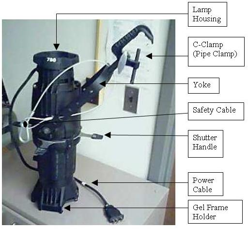

User Tools
- Logged in as: Will Pimblett (will)
- Admin
- Update Profile
- Logout
Sidebar
tech:lx:anatomy_of_a_light
Table of Contents
Anatomy of a Light
The lantern shown is a Source 4 profile. Quite a lot of the information here is tailored from Wikipedia (http://en.wikipedia.org/wiki/Stage_lighting_instrument).

Housing
The lamp housing is a metal or plastic container that serves as a body and prevents light from spilling in unwanted directions. It comprises all of the exterior of the fixture except for the lens or opening. The housing may be designed with specific elements that help reduce heat and increase the efficiency of a lamp. Older instruments were made from rolled and machined steel or aluminum; however, with the advent of the Source Four, many lighting instruments are being made from die cast metal. Die casting allows for one single, light-weight body that is more economical to produce and use.
Power Cable
All fixtures have a short power cable to ensure that the connection point is always within easy reach of a rigged fixture.
Lens or opening
The opening is the gap in the housing from where the beam of light is intended to come. Many fixtures use a lens to help control the beam of light, though some, such as PAR cans and cyclorama lights, do not have any lenses or optics other than the reflector. The lens and the reflector, along with other beam-altering devices are both considered part of the optics system.
Reflector
The reflector affects the quality and directionality of the light output. A reflector is located behind or around the light source in such a way as to direct more light towards the lens or opening. Each unit has a characteristic reflector, used in conjunction with the lens (or lack thereof) to create the desired effect.
An ellipsoidal reflector has a lamp set at one focus point of an ellipsoid-shaped reflector that bounces the light and focuses it at the second focus point of the ellipse. This focuses the beam of light into a tight beam. Ellipsoidal reflectors often are used for tight, focusable spots, although they can be used for floodlights.
A parabolic reflector has a lamp set at the focus point of a parabola-shaped reflector that bounces the light in parallel beams away from the reflector. There is no point at which the light converges, so the light is unfocusable. Parabolic reflectors are used for lights intended to provide an unfocused wash, such as PAR cans.
Yoke
Most instruments are suspended or supported by a U-shaped yoke, fixed at two points to the sides of the fixture, providing an axis of rotation. The yoke is connected to the rig by one of the clamps mentioned below. It may also be affixed to the deck with floor mounts, or attached to the set with a stage screw.
Attachment
G-Clamps utilize a threaded bolt to attach to the rig bar and to hold the fixture secure. Once secured, the light can be panned and tilted using adjustment knobs on the yoke and clamp. In addition, safety cables are used to support the lighting instrument in case the clamp fails.
Lamp or arc source
Most theatrical lamps are tungsten-halogen (or quartz-halogen), an improvement on the original incandescent design that used halogen gas instead of an inert gas. Fluorescent lights are rarely used other than as work lights (see below). Although they are far more efficient, they cannot be dimmed (run at less than full power) without using specialized dimmers, cannot dim to very low levels, do not produce light from a single point or easily concentrated area, and have a warm-up period during which they emit no light or do so intermittently. High-intensity discharge lamps (or HID lamps) are now common where a very bright light output is required, for example in large follow spots, HMI (hydrargyrum medium-arc iodide) floods, and modern automated fixtures. Because these types of lamps cannot be electrically dimmed, dimming is done by mechanical dousers or shutters that physically block portions of the lamp to decrease output.
Some specially-designed fittings now use light-emitting diodes (LEDs) as a light source. LEDs are ideal where an intense but unfocused light source is required, such as for lighting a cyclorama.
Shutters
Often certain lanterns (profiles etc) will have openings for shutters. These allow the beam to be 'shaped' especially useful when you don't want a beam to fill an entire area.
Accessories
Conventional (non-intelligent) fixtures are designed to accept a number of different accessories intended to assist in the modification of the output. The most common, found on almost all stage lights, is the gel frame holder. The gel frame holder is intended to hold gel, mounted in cardboard or metal gel frames. Other common accessories include gobo holders or rotators, iris holders, top hats, barn doors and color scrollers.
tech/lx/anatomy_of_a_light.txt · Last modified: 2019/05/22 01:02 by Sam Osborne